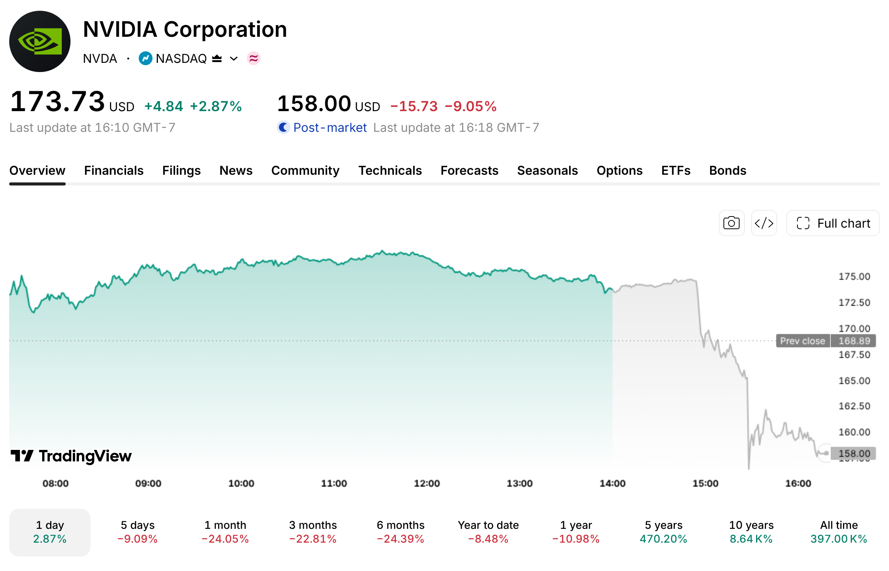

−9%
en minutos, después de la nota del NYT.
Así se desplomó Nvidia:

−24%
en el último mes
~$400B
borrados en 2 sesiones
Captura: TradingView, 11 nov 2026, 4:18 pm
Fuentes: WSJ, NYT · No es asesoría financiera